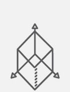

加入我们
作为一支创意团队，我们从来不会止步于某种风格和形式，而是希望能够协同优秀的创作人，一起创造出更多有生命力的作品。
作品简历请发Email：hr@infinistudio.cn
关注我们新浪微博：@InfiniStudio
创意总监服务描述：
深入理解客户需求；
带领团队构思创意方向，制定视频、交互H5、动图等物料的创意方案;
把握创意形式、文案风格及美术风格；
带领并监督组员执行后续的文案、美术、动画、音乐、配音、开发等环节工作；
保证创意方案的执行质量。
期望条件：
能够洞悉行业更迭，了解潮流变化；
创意思维活跃，脑洞大开，善于把握品牌需求；
热爱美术、设计等各类形式艺术；
有丰富的创意经验；
有较好的审美修养。
职务描述：
带领创意小组参与项目的创意构思；
独立撰写并制订创意视频、交互H5等项目的创意方案；
协助文案一起执行方案中的文案工作；
带领小组成员共同执行创意方案。
期望条件：
有丰富的独立撰写项目的创意方案的经验；
能够深入理解客户的需求和品牌定位；
脑洞大，逻辑清晰，洞察精准，表达能力强；
有带领团队经验；
对知名互联网企业有丰富的创意项目经验；
精通ppt及排版。
因为我们会有不同类型的项目，所以你要能hold得住各种类型文案，写得了歌词、讲得了段子，既能装逼也能逗比。喜欢视觉创意，对文字有画面感，耐心也是必不可缺。然而一切的文字功底都是只是基础，我们更需要你洞察精准，创意活跃，以及永远怀着一颗好奇心。你也将和一群热爱设计、插画、动画的创作人一起创作出更棒的作品。
职务描述：
深入理解客户需求；
与小组一起构想创意方案；
撰写创意方案中的文案；
协同其他环节人员共同执行创意方案。
期望条件：
有广告行业的文案、创意经验；
脑洞大开，创意思维活跃；
良好的逻辑思维，懂得换位思考；
洞察精准；
出色的文字功底，有感染力。
优先条件：
审美好，懂美术，热衷视觉创意；
知识全面，涉猎广泛。
想尝试更多好玩有趣的项目？想接触更多互联网创新方向？作为AM你能够在我们这里接触到众多知名的互联网、科技公司，每个项目都简短有趣，动画与创意碰撞发生。我们希望你具备广告行业的AM任职能力，有较强的责任感，项目中和客户保持全程对接，使项目如期推进。
职务描述：
负责与客户沟通跟进项目，准确把握客户需求；
理解、记录、整理项目简报；
协调内外各环节人员，安排项目后续如期执行；
整理项目相关文件，负责项目后续商务事宜。
期望条件：
熟悉广告行业，具备AM任职能力；
性格开朗，具有良好理解能力和沟通能力；
具备较强的责任感，效率高，积极主动，抗压能力强；
善于协调和利用各方资源推动项目进展。
优先条件：
良好的逻辑思维，敏捷的应变能力；
知识全面，涉猎广泛。
作为动画创意团队，我们总是在不断挑战新的动画形式和手法，甚至不同形式之间也可以混合在一起，成为更好玩的作品。我们希望动画导演能够熟悉不同形式的制作手法，有良好的导演能力，善于用镜头讲好每一个故事。
职务描述：
参与前期创意，构想动画风格和视觉表现；
绘制动画短片项目的分镜头脚本；
监督设计师或插画师绘制美术稿，保持风格统一和传达内容的准确性；
监督动画师进行动画制作；
监督配音及音乐。
期望条件：
热爱动画，对不同风格及形式的动画有较强的把控能力；
善于使用动画来讲故事；
对动态形式有良好的创造力；
熟悉角色动画制作；
有较强的美术功底；
职务描述：
参与前期创意，构想动画创意和视觉效果；
与设计师、插画师、动画师一起构思画面及镜头运动；
根据创意脚本进行分镜草稿的构思和绘制。
期望条件：
有较好的理解能力，能够准确把握创意方案；
热爱动画，对镜头、构图、张力有良好把握；
脑洞大，想象力丰富，善于通过分镜草稿快速呈现画面效果；
对角色的动作、表情具有创造力；
手绘功底强，透视无误。
职务描述：
参与前期创意，构想动画创意和视觉效果；
根据分镜，构思镜头运动，绘制layout及原画稿。
期望条件：
热爱动画，对物体的动态变化和镜头节奏有良好把握；
对角色的表演具有创造力和把握能力；
对烟、火、水等二维动画特效有较好的表现力；
对物体运动和状态有敏锐的观察力；
美术功底好。
职务描述：
参与前期创意，构想动画创意和视觉效果；
根据美术设定及原画稿，绘制动画中间帧到完稿。
期望条件：
热爱动画，有较好的角色造型能力；
对动画原理和运动规律有较好理解；
对物体运动和状态有敏锐的观察力；
美术功底好。
.jpg) 三维设计师
三维设计师
职务描述：
参与项目前期创意，构想设计风格和视觉表现；
设计画面和镜头，制作三维视觉概念稿；
设计制作非视频类三维设计稿。
期望条件：
喜欢三维视效，对画面有良好的设计能力；
对三维元素的模型材质、灯光渲染合成有良好表现；
擅长结合多种三维、特效手法，善于后期合成；
对摄像机的运动有较好控制；
能够熟练执行前期分镜创意；
熟练使用C4D、AE、PS。
优先条件：
美术功底好。
三维动画师职务描述：
参与动画前期创意，构想设计风格和视觉表现；
协助设计师共同设计画面和镜头，提供三维技术支持；
对概念设计稿进行三维动画制作。
期望条件：
喜欢三维视效，对画面有良好的设计能力；
对三维元素的模型、材质、动态变化和节奏有良好表现；
擅长结合多种三维、特效手法，善于后期合成；
对摄像机的运动有较好控制；
能够熟练执行前期分镜创意；
熟练使用C4D、AE。
优先条件：
美术功底好。
MG动画师很多朋友说我们是国内Motion Graphics标杆，而他们不知道我们这里可能也是MG动画师的地狱。我们会死磕每一个图形的动态节奏，精心雕琢每根动画曲线，构思巧妙的转场效果。但这些仅仅是基础，不会讲内容的动画师不是好导演。
职务描述：
参与前期创意，构想动画风格和视觉表现；
协助设计师构思画面元素及镜头转场形式；
对静态设计稿进行动画制作。
期望条件：
喜欢动态图形，对图形的动态变化和节奏有良好把握；
善于使用动画来讲述文案内容；
对动态形式有良好的创造力；
熟悉角色动画制作。
优先条件：
美术功底好，并能绘制分镜脚本；
熟练使用C4D制作三维动效；
职务描述：
参与前期创意，构想设计风格和视觉表现；
根据前期分镜脚本，使用图形或平面元素设计画面；
参与多种平面类设计。
期望条件：
喜欢图形设计与视觉设计；
对画面构成和色彩有较好的控制力；
善于将内容、信息进行视觉设计展现；
对视觉形式富有创新能力；
熟练使用AI、PS。
优先条件：
有网页设计或UI工作经验；
熟练使用三维软件制作三维渲染。
一成不变不是我们的做派，我们喜欢吸收并尝试格式各样的画风，期待你也一样愿意尝试挑战。而你的静帧画作，也将在动画师小伙伴的手中变得具有灵魂。
职务描述：
参与前期创意，构想绘画风格和视觉表现；
参与前期分镜脚本，绘制美术效果图及插画；
其他插画相关工作。
期望条件：
对画面、构成和色彩有敏锐的观察力和调和力；
善于将内容信息进行绘画展现；
对插画形式富有创新能力和创造力；
美术功底好。
欢迎对设计和动画充满热爱和激情的同学来我们这里实习，你将有机会参与具有挑战的项目实战。
除以上职位，我们更欢迎动态图形综合能力较强的小伙伴加入我们，和我们一起做喜欢的事情。请将简历、作品和期望薪资发至邮箱。
作品简历请发Email：hr@infinistudio.cn